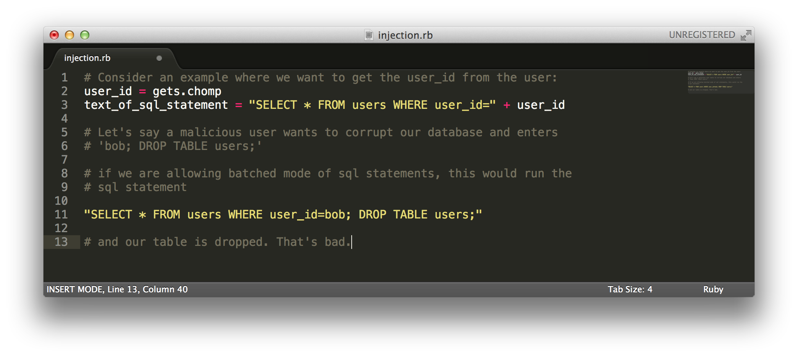
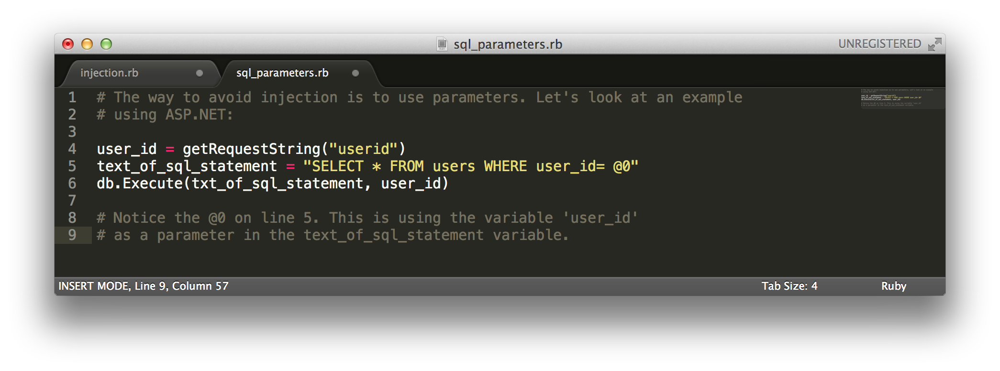

September
18
2014
Let's look at a potential danger in allowing users to interact with your database queries - SQL injections. Consider an example in which we have a webpage and want to allow the user to input their user_id for a query to the database:
The way to avoid injections is to use parameters. Parameters will be checked by the sql engine, and not treated as literal SQL statements to be executed. Let's look at an example of this using ASP.NET:
Parameters are checked by the sql engine for appropriateness and therefore injections have less chance of making it through. So there you have it - use parameters to avoid injections!